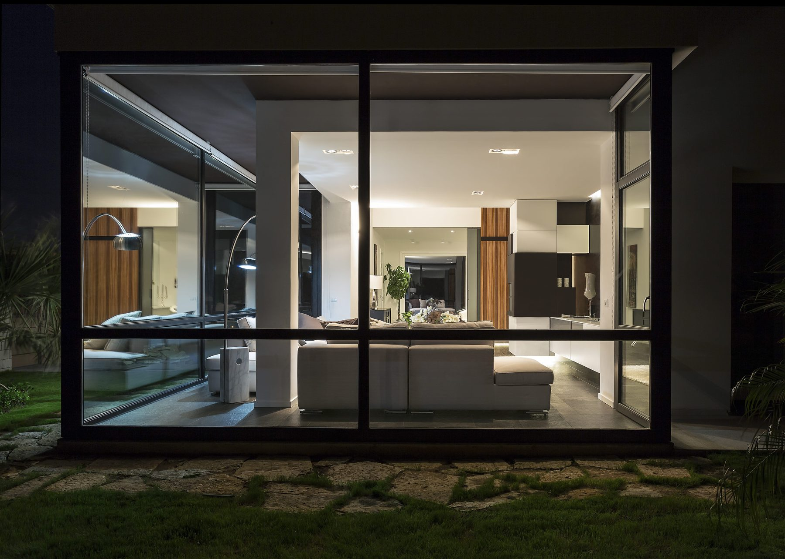

I Migliori Studi di Architettura a Palermo: 5 Criteri per Scegliere l'Architetto Giusto
Contenuto informativo a cura di Studio4E. Se vuoi un parere sul tuo caso: scrivici su WhatsApp.

Dal 1996 a Palermo, portfolio verificato e rating 5/5 su Houzz.
Studio 4e opera in tutta la Sicilia: scopri tutte le guide sul portale regionale Architetti Sicilia e gli approfondimenti su Architetti Catania, Architetti Trapani e Architetti Taormina.
Come riconoscere i migliori studi di architettura a Palermo
Quando si cerca un architetto a Palermo, la scelta non è semplice. Google restituisce centinaia di risultati, ma come distinguere i professionisti davvero competenti da chi si improvvisa? La differenza tra un progetto eccellente e uno mediocre sta nella qualità del professionista che lo segue.
I migliori architetti a Palermo non si riconoscono solo dai rendering accattivanti o dai siti web curati. La vera eccellenza emerge da criteri concreti e verificabili che dimostrano esperienza, metodo e risultati documentati. In questa guida scoprirai i 5 parametri oggettivi per valutare uno studio di architettura.
In sintesi: i migliori studi di architettura a Palermo hanno (1) un portfolio di progetti realizzati in città, (2) recensioni verificabili su Houzz o Google, (3) esperienza diretta con SUE e Soprintendenza di Palermo, (4) un metodo con fasi, computo metrico e capitolato, (5) iscrizione all'Ordine e polizza RC. Confronta almeno 2-3 studi con la checklist più sotto.
Studi di architettura a Palermo: quale tipo di studio fa per te
Non esiste un "miglior studio" in assoluto: esiste lo studio più adatto al tuo progetto. A Palermo gli studi di architettura si differenziano soprattutto per specializzazione. Prima di confrontare nomi e recensioni, chiarisci in quale categoria rientra il tuo intervento:
- Ristrutturazioni residenziali – appartamenti e case: conta la gestione di computo metrico, imprese e pratiche CILA/SCIA. Vedi la guida ristrutturazione casa a Palermo.
- Restauro e centro storico – immobili vincolati tra Kalsa, Albergheria, Capo e Vucciria: serve esperienza con la Soprintendenza e con il Piano Particolareggiato Esecutivo. Vedi restauro architettonico e architetto Palermo Centro.
- Interior design – layout, luce, arredi su misura e render 3D. Vedi architetto d'interni a Palermo.
- Hospitality – B&B, case vacanze e affitti brevi: servono competenze su requisiti regionali, durabilità dei materiali e resa economica. Vedi progettazione B&B a Palermo.
- Commerciale – negozi, ristoranti e uffici: agibilità, impianti, ASP e insegne. Vedi progettazione locale commerciale.
- Ville e case al mare – Mondello, Sferracavallo, Bagheria: vincoli paesaggistici e materiali resistenti alla salsedine. Vedi architetto a Mondello.
Dove trovare gli studi di architettura a Palermo
Per costruire una rosa di studi da confrontare, usa fonti verificabili:
- Albo dell'Ordine degli Architetti PPC della provincia di Palermo – per verificare che il professionista sia iscritto e abilitato.
- Houzz e Archilovers – portfolio fotografici e recensioni collegate a progetti reali.
- Google Maps – recensioni recenti, sede fisica e orari: preferisci studi con sede verificabile in città.
- Passaparola e imprese edili – chiedi alle imprese con cui hanno lavorato: sanno chi gestisce bene un cantiere.
Poi contatta 2-3 studi, chiedi un incontro e confrontali con i 5 criteri che seguono.
1. Portfolio Documentato con Progetti Reali
Il primo indicatore della qualità di un architetto è il suo portfolio. Non immagini generiche scaricate da banche dati, ma progetti effettivamente realizzati con foto before/after, planimetrie e descrizioni delle sfide affrontate.
Cosa cercare nel portfolio:
- Progetti completati negli ultimi 3 anni – L'architettura evolve rapidamente. Progetti recenti dimostrano aggiornamento costante.
- Casi simili al tuo – Se devi ristrutturare un B&B a Palermo, verifica che abbiano esperienza in hospitality.
- Foto del cantiere e del risultato finale – Non solo rendering 3D, ma immagini reali dell'opera realizzata.
- Localizzazione geografica – Progetti a Palermo e provincia dimostrano conoscenza delle specificità locali (vincoli centro storico, pratiche comunali, fornitori).
- Varietà tipologica – Residenziale, commerciale, hospitality. Gli studi strutturati gestiscono diverse complessità.
Caso Studio4E
Studio 4e documenta ogni progetto su studio4e.it con gallery fotografiche professionali, planimetrie before/after e descrizione del concept. Portfolio verificabile su Houzz con 11 recensioni e rating 5/5.
2. Recensioni Verificate su Piattaforme Affidabili
Le recensioni sono lo strumento più efficace per valutare la soddisfazione dei clienti precedenti. Ma attenzione: non tutte le recensioni hanno lo stesso valore.
Dove cercare recensioni attendibili:
| Piattaforma | Affidabilità | Perché è importante |
|---|---|---|
| Houzz | ★★★★★ Massima | Recensioni legate a progetti fotografati. Impossibile falsificare. |
| Google Business | ★★★★☆ Alta | Profili verificati, ma possibili recensioni non autentiche. |
| Sito web studio | ★★☆☆☆ Bassa | Facilmente selezionate. Sempre verificare su fonti esterne. |
Red flag da evitare:
- Recensioni tutte a 5 stelle senza dettagli specifici
- Assenza totale di recensioni online (studio fantasma?)
- Solo testimonianze sul sito senza link a profili verificabili
- Recensioni negative gestite male o ignorate
3. Esperienza Locale: Conoscenza di Palermo e Normative Comunali
Palermo ha specificità burocratiche e urbanistiche che solo chi lavora stabilmente sul territorio conosce a fondo. I migliori architetti a Palermo hanno rapporti consolidati con:
- Sportello Unico Edilizia (SUE) del Comune di Palermo – Sanno come presentare pratiche CILA, SCIA e Permessi di Costruire evitando rigetti e tempi morti.
- Soprintendenza BB.CC.AA. – Fondamentale per interventi in centro storico o su edifici vincolati.
- Genio Civile – Per pratiche strutturali e sismiche.
- Vigili del Fuoco – Obbligatori per attività commerciali, hotel, B&B sopra certe metrature.
- Fornitori e imprese locali – Conoscenza diretta garantisce preventivi più competitivi e qualità controllata.
Un architetto di Milano può essere eccellente, ma se non conosce le procedure del Comune di Palermo rischi ritardi di mesi. L'esperienza locale non è un dettaglio, è un vantaggio competitivo decisivo.
4. Metodo di Lavoro Strutturato e Trasparente
I professionisti top non improvvisano. Hanno un metodo certificato che garantisce controllo su tempi, costi e qualità. Al primo incontro, uno studio serio ti spiega:
Le fasi del progetto:
- Sopralluogo e rilievo – Analisi dello stato di fatto, misurazioni, verifica vincoli urbanistici.
- Concept e progetto preliminare – Proposte distributive, moodboard, prime ipotesi di costo.
- Progetto definitivo – Elaborati tecnici completi, computo metrico estimativo, capitolato.
- Progetto esecutivo – Dettagli costruttivi, specifiche materiali, tavole per l'impresa.
- Pratiche edilizie – Deposito CILA/SCIA/PdC presso il Comune.
- Direzione lavori – Coordinamento cantiere, controllo qualità, contabilità, collaudo finale.
Documenti che deve fornirti:
- Contratto di incarico con scope chiaro e compenso dettagliato
- Cronoprogramma con tempistiche di ogni fase
- Computo metrico estimativo per confrontare preventivi imprese
- Capitolato tecnico che descrive materiali e modalità esecuzione
Perché il metodo è un vantaggio per te
Con un processo strutturato sai sempre a che punto sei, quanto manca al completamento e se ci sono criticità. Eviti l'improvvisazione che genera ritardi, varianti in corso d'opera e costi imprevisti. La trasparenza è il primo indicatore di professionalità seria.
5. Certificazioni Professionali e Assicurazioni
Un architetto può essere iscritto all'Ordine ma operare senza le garanzie necessarie. I migliori studi di architettura a Palermo hanno:
Certificazioni obbligatorie:
- Iscrizione Ordine Architetti P.P.C. di Palermo – Verifica su oappc.pa.it. Solo gli iscritti possono firmare progetti e pratiche edilizie.
- Polizza RC Professionale attiva – Copre eventuali errori progettuali. Richiedi sempre copia della polizza.
- Partita IVA e regolarità contributiva – Garanzia di serietà fiscale e previdenziale.
Certificazioni facoltative (ma significative):
- Certificazione ISO 9001 – Sistema di gestione qualità certificato
- Accreditamenti Houzz Pro – Riconoscimento per eccellenza servizio clienti
- Formazione continua certificata – Aggiornamento su normative, materiali, tecnologie BIM
Checklist: come confrontare gli studi di architettura a Palermo
Prima di scegliere, usa questa checklist per confrontare più professionisti:
| Criterio | Studio A | Studio B | Studio4E |
|---|---|---|---|
| Portfolio con progetti reali | ☐ | ☐ | ✓ |
| Recensioni verificate Houzz/Google | ☐ | ☐ | ✓ |
| Esperienza pratiche Comune Palermo | ☐ | ☐ | ✓ |
| Metodo strutturato con fasi chiare | ☐ | ☐ | ✓ |
| Polizza RC professionale | ☐ | ☐ | ✓ |
| Trasparenza costi (preventivo scritto) | ☐ | ☐ | ✓ |
Quanto Costa un Architetto di Qualità a Palermo?
I migliori architetti a Palermo non sono i più economici, ma offrono il miglior rapporto qualità-prezzo. Un professionista esperto evita errori che costerebbero 10 volte il suo compenso.
Range di prezzo realistici (2026):
- Consulenza iniziale: 150-300€ (spesso gratuita se si prosegue)
- Progetto ristrutturazione appartamento 80mq: 2.500-5.000€
- Progetto + Direzione Lavori completa: 10-15% del costo lavori
- Pratiche edilizie (CILA/SCIA): 800-2.000€
- Rendering 3D fotorealistici: 300-800€ per ambiente
Approfondisci nella guida dedicata: Quanto costa un architetto a Palermo.
Perché Studio 4e è tra i migliori studi di architettura a Palermo
Studio 4e, studio di architettura in Piazza Sant'Oliva 19 a Palermo dal 1996 fondato dagli architetti Fabio Costanzo e Maria Rosaria Piazza, soddisfa i criteri che abbiamo analizzato. Nell'aprile 2026 è stato inoltre incluso da Archie Interiors nella selezione dei migliori studi di architettura a Palermo.
✓ Portfolio Documentato
Oltre 100 progetti completati tra Palermo, Trapani, Catania e Taormina. Schede e foto nella pagina progetti di Studio 4e: appartamenti, ville, ristoranti e showroom.
✓ Recensioni 5/5
11 recensioni verificate su Houzz con rating perfetto. Clienti reali, progetti documentati, zero recensioni negative.
✓ A Palermo dal 1996
Sede operativa a Palermo (Piazza Sant'Oliva 19). Centinaia di pratiche depositate al Comune di Palermo, rapporti consolidati con SUE e Soprintendenza.
✓ Metodo Certificato
Processo standardizzato in 6 fasi con cronoprogramma, computo metrico, capitolato tecnico. Nessuna improvvisazione, massima trasparenza.
Domande Frequenti
Come riconoscere i migliori architetti a Palermo?
I migliori architetti a Palermo si riconoscono da: portfolio documentato con progetti reali, recensioni verificate su piattaforme come Houzz, esperienza locale con pratiche edilizie comunali, metodo di lavoro strutturato, trasparenza sui costi. Evita chi promette tutto subito senza mostrare progetti precedenti.
Quanto costa un architetto top a Palermo?
Un architetto con esperienza consolidata a Palermo applica il 10-15% del costo lavori per progettazione completa + direzione lavori. Per ristrutturazioni complete (es. 80mq) si parte da 3.500-6.000€ per il solo progetto. La qualità ha un costo, ma evita errori che costerebbero molto di più.
Quali certificazioni deve avere un buon architetto?
Iscrizione all'Ordine degli Architetti di Palermo (obbligatoria), polizza professionale RC attiva, formazione continua certificata. Gli studi più strutturati hanno anche certificazioni ISO 9001 per la qualità del processo progettuale.
Dove trovare recensioni vere di architetti a Palermo?
Le piattaforme più affidabili sono: Houzz (recensioni verificate con progetti), Google Business Profile, portali settoriali come Archilovers. Diffida di recensioni anonime o troppo generiche. Chiedi sempre referenze dirette a clienti precedenti.
Quali sono i migliori studi di architettura a Palermo?
Il miglior studio è quello con esperienza documentata nel tuo tipo di progetto (ristrutturazione, restauro, interni, hospitality o commerciale), recensioni verificabili, sede a Palermo e un metodo trasparente con preventivo scritto. Studio 4e, attivo a Palermo dal 1996 e con valutazione 5/5 su Houzz, è uno degli studi che rispondono a tutti questi criteri.
Meglio uno studio grande o un architetto singolo?
Gli studi strutturati offrono team specializzati (progettazione, pratiche, 3D, direzione lavori), backup in caso di imprevisti, processi certificati. Professionisti singoli danno più attenzione personalizzata. Per progetti complessi (commerciale, hospitality, ville) meglio studi con team.
Vuoi una valutazione del tuo progetto?
Studio 4e offre consulenza iniziale gratuita con sopralluogo, analisi vincoli e prime ipotesi progettuali. Risposta entro 24h via WhatsApp.
Approfondimenti Correlati
Come scegliere un architetto a Palermo
Criteri oggettivi, red flag da evitare e domande da fare al primo incontro.
Quanto costa un architetto a Palermo
Prezzi reali 2026, metodi di calcolo e cosa include la parcella professionale.
Studio di architettura a Palermo
Differenze tra studio strutturato e professionista singolo. Pro e contro.
Ristrutturare un appartamento a Palermo
Iter completo: progetto, pratiche, costi, tempi e scelta impresa.
Altri studi di architettura a Palermo
Per completezza, altri studi di architettura attivi a Palermo e provincia (ordine non di merito). Fonte: selezione editoriale "Migliori studi di architettura a Palermo" di Archie Interiors (aprile 2026), che include anche Studio 4e.
- Studio Didea – Palermo, dal 2012 – residenziale, hospitality, commerciale e interni
- Provenzano Architetti Associati – Palermo, dal 1971 – architettura, progetto urbano, interni e spazi pubblici
- LYGA Studio – Palermo – interior design e restauro di dimore storiche
- INO PIAZZA Studio Architettura – Palermo – interni, appartamenti, ville e allestimenti
- Luigi Smecca Architetti – Palermo – home design e locali ho.re.ca.
- AM3 Studio – Palermo, dal 2011 – architettura, paesaggio e spazio pubblico
- Studio Forward – Palermo, dal 2004 – architettura, interni e identità visiva
- La Leta Architettura – Palermo – interni residenziali e ricettivi
- SS Studio – Palermo – architettura, restauro, interni e arredo su misura
- Studio GD Architetture – Palermo, dal 2008 – housing, retail, hospitality e uffici
- FORME Studio di Architettura – Palermo – architettura, interni e direzione lavori
- de Francisci Architetti – Palermo – interni, ristrutturazione e lighting
- Bellomonte & Pensabene – Palermo – residenziale, commerciale e ricettivo
- Salvatore Nigrelli Architetto – Palermo, centro storico – residenziale, hospitality ed exhibit design
- PM Architecture – Piergiorgio Miserendino – Palermo, dal 2003 – residenziale, commerciale e ricettivo
- PL5 Architettura – Palermo, dal 1974 – restauro e recupero del centro storico
- Cannone Architetti – Palermo, dal 2012 – architettura, ingegneria e spazi aperti
- Studio MAMe – Marzia Messina – Palermo, dal 2005 – residenze, ville e locali su misura
- Architetti Fazioli Associati – Palermo – architettura e interni
- Ruffino Associati – Palermo, dal 2002 – recupero, residenziale e hospitality
- vid'A – Visioni d'Architettura – Menfi e area palermitana – ristrutturazioni, interni e nuove costruzioni
- SLC architects – Misilmeri, dal 2001 – residenziale, commerciale e urbanistica
- Piazza Architettura – Palermo – opere pubbliche, restauro e paesaggio
- Puccio Collodoro Architetti – Palermo e Gela – architettura, interni e progetto urbano
Nota: Questa guida è informativa e aggiornata a ottobre 2026. La scelta finale spetta sempre al cliente in base alle proprie esigenze specifiche. Studio4E è disponibile per consulenze gratuite e non vincolanti.